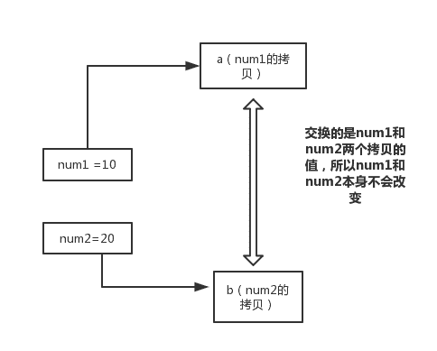
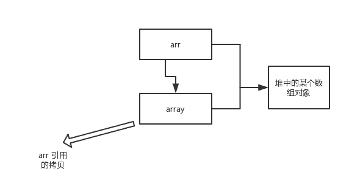
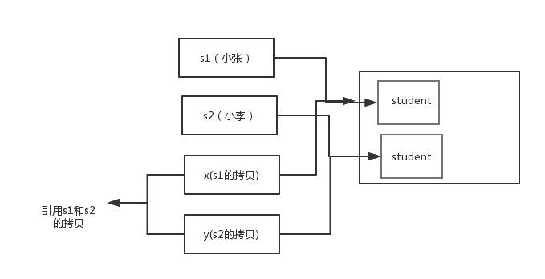
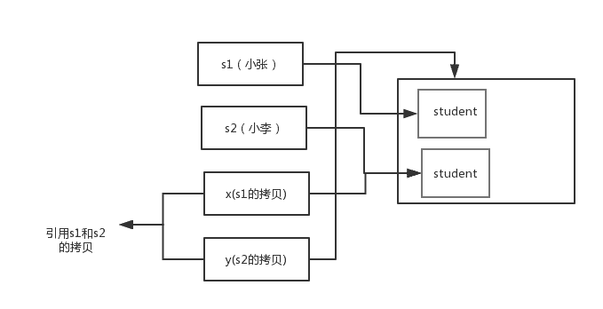

Java基础知识 基础语法-面向对象
面向对象概述
面向对象和面向过程的区别
面向过程：
优点： 性能比面向对象高，因为类调用时需要实例化，开销比较大，比较消耗资源;比如单片机、嵌入式开发、Linux/Unix 等一般采用面向过程开发，性能是最重要的因素。
缺点： 没有面向对象易维护、易复用、易扩展
面向对象：
优点： 易维护、易复用、易扩展，由于面向对象有封装、继承、多态性的特性，可以设计出低耦合的系统，使系统更加灵活、更加易于维护
缺点： 性能比面向过程低
面向过程是具体化的，流程化的，解决一个问题，你需要一步一步的分析，一步一步的实现。
面向对象是模型化的，你只需抽象出一个类，这是一个封闭的盒子，在这里你拥有数据也拥有解决问题的方法。需要什么功能直接使用就可以了，不必去一步一步的实现，至于这个功能是如何实现的，管我们什么事？我们会用就可以了。
面向对象的底层其实还是面向过程，把面向过程抽象成类，然后封装，方便我们使用的就是面向对象了。
面向对象三大特性
面向对象的特征有哪些方面
面向对象的特征主要有以下几个方面：
抽象： 抽象是将一类对象的共同特征总结出来构造类的过程，包括数据抽象和行为抽象两方面。抽象只关注对象有哪些属性和行为，并不关注这些行为的细节是什么。
封装： 封装把一个对象的属性私有化，同时提供一些可以被外界访问的属性的方法，如果属性不想被外界访问，我们大可不必提供方法给外界访问。但是如果一个类没有提供给外界访问的方法，那么这个类也没有什么意义了。
继承： 继承是使用已存在的类的定义作为基础建立新类的技术，新类的定义可以增加新的数据或新的功能，也可以用父类的功能，但不能选择性地继承父类。通过使用继承我们能够非常方便地复用以前的代码。
多态： 所谓多态就是指程序中定义的引用变量所指向的具体类型和通过该引用变量发出的方法调用在编程时并不确定，而是在程序运行期间才确定，即一个引用变量到底会指向哪个类的实例对象，该引用变量发出的方法调用到底是哪个类中实现的方法，必须在由程序运行期间才能决定。
其中 Java 面向对象编程三大特性： 封装 继承 多态
封装： 隐藏对象的属性和实现细节，仅对外提供公共访问方式，将变化隔离，便于使用，提高复用性和安全性。
继承： 继承是使用已存在的类的定义作为基础建立新类的技术，新类的定义可以增加新的数据或新的功能，也可以用父类的功能，但不能选择性地继承父类。通过使用继承可以提高代码复用性。继承是多态的前提。
关于继承如下 3 点请记住：
子类拥有父类非
private的属性和方法。子类可以拥有自己属性和方法，即子类可以对父类进行扩展。
子类可以用自己的方式实现父类的方法。
多态性： 父类或接口定义的引用变量可以指向子类或具体实现类的实例对象。提高了程序的拓展性。
在 Java 中有两种形式可以实现多态：继承（多个子类对同一方法的重写）和接口（实现接口并覆盖接口中同一方法）。
方法重载（overload）实现的是编译时的多态性（也称为前绑定），而方法重写（override）实现的是运行时的多态性（也称为后绑定）。
一个引用变量到底会指向哪个类的实例对象，该引用变量发出的方法调用到底是哪个类中实现的方法，必须在由程序运行期间才能决定。运行时的多态是面向对象最精髓的东西，要实现多态需要做两件事：
- 方法重写（子类继承父类并重写父类中已有的或抽象的方法）；
- 对象造型（用父类型引用子类型对象，这样同样的引用调用同样的方法就会根据子类对象的不同而表现出不同的行为）。
什么是多态机制？Java 语言是如何实现多态的？
所谓多态就是指程序中定义的引用变量所指向的具体类型和通过该引用变量发出的方法调用在编程时并不确定，而是在程序运行期间才确定，即一个引用变量倒底会指向哪个类的实例对象，该引用变量发出的方法调用到底是哪个类中实现的方法，必须在由程序运行期间才能决定。因为在程序运行时才确定具体的类，这样，不用修改源程序代码，就可以让引用变量绑定到各种不同的类实现上，从而导致该引用调用的具体方法随之改变，即不修改程序代码就可以改变程序运行时所绑定的具体代码，让程序可以选择多个运行状态，这就是多态性。
多态分为编译时多态和运行时多态。其中编辑时多态是静态的，主要是指方法的重载，它是根据参数列表的不同来区分不同的函数，通过编辑之后会变成两个不同的函数，在运行时谈不上多态。而运行时多态是动态的，它是通过动态绑定来实现的，也就是我们所说的多态性。
多态的实现
Java 实现多态有三个必要条件：继承、重写、向上转型。
继承： 在多态中必须存在有继承关系的子类和父类。
重写： 子类对父类中某些方法进行重新定义，在调用这些方法时就会调用子类的方法。
向上转型： 在多态中需要将子类的引用赋给父类对象，只有这样该引用才能够具备技能调用父类的方法和子类的方法。
只有满足了上述三个条件，我们才能够在同一个继承结构中使用统一的逻辑实现代码处理不同的对象，从而达到执行不同的行为。
对于 Java 而言，它多态的实现机制遵循一个原则：当超类对象引用变量引用子类对象时，被引用对象的类型而不是引用变量的类型决定了调用谁的成员方法，但是这个被调用的方法必须是在超类中定义过的，也就是说被子类覆盖的方法。
面向对象五大基本原则是什么（可选）
- 单一职责原则
SRP(Single Responsibility Principle)
类的功能要单一，不能包罗万象，跟杂货铺似的。
- 开放封闭原则
OCP(Open－Close Principle)
一个模块对于拓展是开放的，对于修改是封闭的，想要增加功能热烈欢迎，想要修改，哼，一万个不乐意。
- 里式替换原则
LSP(the Liskov Substitution Principle LSP)
子类可以替换父类出现在父类能够出现的任何地方。比如你能代表你爸去你姥姥家干活。哈哈~~
- 依赖倒置原则
DIP(the Dependency Inversion Principle DIP)
高层次的模块不应该依赖于低层次的模块，他们都应该依赖于抽象。抽象不应该依赖于具体实现，具体实现应该依赖于抽象。就是你出国要说你是中国人，而不能说你是哪个村子的。比如说中国人是抽象的，下面有具体的 xx 省，xx 市，xx 县。你要依赖的抽象是中国人，而不是你是 xx 村的。
- 接口分离原则
ISP(the Interface Segregation Principle ISP)
设计时采用多个与特定客户类有关的接口比采用一个通用的接口要好。就比如一个手机拥有打电话，看视频，玩游戏等功能，把这几个功能拆分成不同的接口，比在一个接口里要好的多。
类与接口
抽象类和接口的对比
抽象类是用来捕捉子类的通用特性的。接口是抽象方法的集合。
从设计层面来说，抽象类是对类的抽象，是一种模板设计，接口是行为的抽象，是一种行为的规范。
相同点
- 接口和抽象类都不能实例化
- 都位于继承的顶端，用于被其他实现或继承
- 都包含抽象方法，其子类都必须覆写这些抽象方法
不同点
| 参数 | 抽象类 | 接口 |
|---|---|---|
| 声明 | 抽象类使用 abstract 关键字声明 |
接口使用 interface 关键字声明 |
| 实现 | 子类使用 extends 关键字来继承抽象类。如果子类不是抽象类的话，它需要提供抽象类中所有声明的方法的实现 |
子类使用 implements 关键字来实现接口。它需要提供接口中所有声明的方法的实现 |
| 构造器 | 抽象类可以有构造器 | 接口不能有构造器 |
| 访问修饰符 | 抽象类中的方法可以是任意访问修饰符 | 接口方法默认修饰符是 public 。并且不允许定义为 private 或者 protected |
| 多继承 | 一个类最多只能继承一个抽象类 | 一个类可以实现多个接口 |
| 字段声明 | 抽象类的字段声明可以是任意的 | 接口的字段默认都是 static 和 final 的 |
备注： Java8 中接口中引入默认方法和静态方法，以此来减少抽象类和接口之间的差异。
现在，我们可以为接口提供默认实现的方法了，并且不用强制子类来实现它。
接口和抽象类各有优缺点，在接口和抽象类的选择上，必须遵守这样一个原则：
- 行为模型应该总是通过接口而不是抽象类定义，所以通常是优先选用接口，尽量少用抽象类。
- 选择抽象类的时候通常是如下情况：需要定义子类的行为，又要为子类提供通用的功能。
普通类和抽象类有哪些区别？
- 普通类不能包含抽象方法，抽象类可以包含抽象方法。
- 抽象类不能直接实例化，普通类可以直接实例化。
抽象类能使用 final 修饰吗？
不能，定义抽象类就是让其他类继承的，如果定义为 final 该类就不能被继承，这样彼此就会产生矛盾，所以 final 不能修饰抽象类
创建一个对象用什么关键字？对象实例与对象引用有何不同？
new 关键字，new 创建对象实例（对象实例在堆内存中），对象引用指向对象实例（对象引用存放在栈内存中）。一个对象引用可以指向 0 个或 1 个对象（一根绳子可以不系气球，也可以系一个气球）;一个对象可以有 n 个引用指向它（可以用 n 条绳子系住一个气球）
变量与方法
成员变量与局部变量的区别有哪些
变量： 在程序执行的过程中，在某个范围内其值可以发生改变的量。从本质上讲，变量其实是内存中的一小块区域
成员变量： 方法外部，类内部定义的变量
局部变量： 类的方法中的变量。
成员变量和局部变量的区别：
作用域
成员变量：针对整个类有效。
局部变量：只在某个范围内有效。(一般指的就是方法,语句体内)
存储位置
成员变量：随着对象的创建而存在，随着对象的消失而消失，存储在堆内存中。
局部变量：在方法被调用，或者语句被执行的时候存在，存储在栈内存中。当方法调用完，或者语句结束后，就自动释放。
生命周期
成员变量：随着对象的创建而存在，随着对象的消失而消失
局部变量：当方法调用完，或者语句结束后，就自动释放。
初始值
成员变量：有默认初始值。
局部变量：没有默认初始值，使用前必须赋值。
使用原则
在使用变量时需要遵循的原则为：就近原则
首先在局部范围找，有就使用；接着在成员位置找。
在 Java 中定义一个不做事且没有参数的构造方法的作用
Java 程序在执行子类的构造方法之前，如果没有用 super()来调用父类特定的构造方法，则会调用父类中“没有参数的构造方法”。因此，如果父类中只定义了有参数的构造方法，而在子类的构造方法中又没有用 super()来调用父类中特定的构造方法，则编译时将发生错误，因为 Java 程序在父类中找不到没有参数的构造方法可供执行。解决办法是在父类里加上一个不做事且没有参数的构造方法。
在调用子类构造方法之前会先调用父类没有参数的构造方法，其目的是？
帮助子类做初始化工作。
一个类的构造方法的作用是什么？若一个类没有声明构造方法，改程序能正确执行吗？为什么？
主要作用是完成对类对象的初始化工作。可以执行。因为一个类即使没有声明构造方法也会有默认的不带参数的构造方法。
构造方法有哪些特性？
- 名字与类名相同；
- 没有返回值，但不能用
void声明构造函数； - 生成类的对象时自动执行，无需调用。
静态变量和实例变量区别
静态变量： 静态变量由于不属于任何实例对象，属于类的，所以在内存中只会有一份，在类的加载过程中，JVM 只为静态变量分配一次内存空间。
实例变量： 每次创建对象，都会为每个对象分配成员变量内存空间，实例变量是属于实例对象的，在内存中，创建几次对象，就有几份成员变量。
静态变量与普通变量区别
static 变量也称作静态变量，静态变量和非静态变量的区别是：静态变量被所有的对象所共享，在内存中只有一个副本，它当且仅当在类初次加载时会被初始化。而非静态变量是对象所拥有的，在创建对象的时候被初始化，存在多个副本，各个对象拥有的副本互不影响。
还有一点就是 static 成员变量的初始化顺序按照定义的顺序进行初始化。
静态方法和实例方法有何不同？
静态方法和实例方法的区别主要体现在两个方面：
- 在外部调用静态方法时，可以使用”
类名.方法名“的方式，也可以使用”对象名.方法名“的方式。而实例方法只有后面这种方式。也就是说，调用静态方法可以无需创建对象。 - 静态方法在访问本类的成员时，只允许访问静态成员（即静态成员变量和静态方法），而不允许访问实例成员变量和实例方法；实例方法则无此限制
在一个静态方法内调用一个非静态成员为什么是非法的？
由于静态方法可以不通过对象进行调用，因此在静态方法里，不能调用其他非静态变量，也不可以访问非静态变量成员。
什么是方法的返回值？返回值的作用是什么？
方法的返回值是指我们获取到的某个方法体中的代码执行后产生的结果！（前提是该方法可能产生结果）。返回值的作用:接收出结果，使得它可以用于其他的操作！
内部类
什么是内部类
在 Java 中，可以将一个类的定义放在另外一个类的定义内部，这就是内部类。内部类本身就是类的一个属性，与其他属性定义方式一致。
内部类的分类有哪些
内部类可以分为四种：静态内部类、成员内部类、局部内部类和匿名内部类。
静态内部类
定义在类内部的静态类，就是静态内部类。
1 | public class Outer { |
静态内部类可以访问外部类所有的静态变量，而不可访问外部类的非静态变量；静态内部类的创建方式，new 外部类.静态内部类()，如下：
1 | Outer.StaticInner inner = new Outer.StaticInner(); |
成员内部类
定义在类内部，成员位置上的非静态类，就是成员内部类。
1 | public class Outer { |
成员内部类可以访问外部类所有的变量和方法，包括静态和非静态，私有和公有。成员内部类依赖于外部类的实例，它的创建方式，new 外部类实例().new 内部类()，如下：
1 | Outer.Inner inner = new Outer().new Inner(); |
局部内部类
定义在方法中的内部类，就是局部内部类。
1 | public class Outer { |
定义在实例方法中的局部类可以访问外部类的所有变量和方法，定义在静态方法中的局部类只能访问外部类的静态变量和方法。局部内部类的创建方式，在对应方法内，new 内部类()，如下：
1 | public static void testStaticFunctionClass(){ |
匿名内部类
匿名内部类就是没有名字的内部类，日常开发中使用的比较多。
1 | public class Outer { |
除了没有名字，匿名内部类还有以下特点：
- 匿名内部类必须继承一个抽象类或者实现一个接口。
- 匿名内部类不能定义任何静态成员和静态方法。
- 当所在的方法的形参需要被匿名内部类使用时，必须声明为
final。 - 匿名内部类不能是抽象的，它必须要实现继承的类或者实现的接口的所有抽象方法。
匿名内部类创建方式：
1 | new 类/接口{ |
内部类的优点
我们为什么要使用内部类呢？因为它有以下优点：
- 一个内部类对象可以访问创建它的外部类对象的内容，包括私有数据！
- 内部类不为同一包的其他类所见，具有很好的封装性；
- 内部类有效实现了“多重继承”，优化
java单继承的缺陷。 - 匿名内部类可以很方便的定义回调。
内部类有哪些应用场景
- 一些多算法场合
- 解决一些非面向对象的语句块。
- 适当使用内部类，使得代码更加灵活和富有扩展性。
- 当某个类除了它的外部类，不再被其他的类使用时。
局部内部类和匿名内部类访问局部变量的时候，为什么变量必须要加上 final？
局部内部类和匿名内部类访问局部变量的时候，为什么变量必须要加上 final 呢？它内部原理是什么呢？
先看这段代码：
1 | public class Outer { |
以上例子，为什么要加 final 呢？是因为生命周期不一致， 局部变量直接存储在栈中，当方法执行结束后，非 final 的局部变量就被销毁。而局部内部类对局部变量的引用依然存在，如果局部内部类要调用局部变量时，就会出错。加了 final，可以确保局部内部类使用的变量与外层的局部变量区分开，解决了这个问题。
内部类相关，看程序说出运行结果
1 | public class Outer { |
运行结果：
1 | 局部变量：14 |
重写与重载
构造器（constructor）是否可被重写（override）
构造器不能被继承，因此不能被重写，但可以被重载。
重载（Overload）和重写（Override）的区别。重载的方法能否根据返回类型进行区分？
方法的重载和重写都是实现多态的方式，区别在于前者实现的是编译时的多态性，而后者实现的是运行时的多态性。
重载： 发生在同一个类中，方法名相同参数列表不同（参数类型不同、个数不同、顺序不同），与方法返回值和访问修饰符无关，即重载的方法不能根据返回类型进行区分
重写： 发生在父子类中，方法名、参数列表必须相同，返回值小于等于父类，抛出的异常小于等于父类，访问修饰符大于等于父类（里氏代换原则）；如果父类方法访问修饰符为 private 则子类中就不是重写。
对象相等判断
== 和 equals 的区别是什么
== : 它的作用是判断两个对象的地址是不是相等。即，判断两个对象是不是同一个对象。(基本数据类型 == 比较的是值，引用数据类型 == 比较的是内存地址)
equals() : 它的作用也是判断两个对象是否相等。但它一般有两种使用情况：
情况 1：类没有覆盖
equals()方法。则通过equals()比较该类的两个对象时，等价于通过“==”比较这两个对象。情况 2：类覆盖了
equals()方法。一般，我们都覆盖equals()方法来两个对象的内容相等；若它们的内容相等，则返回true(即，认为这两个对象相等)。
举个例子：
1 | public class test1 { |
说明：
String中的equals方法是被重写过的，因为object的equals方法是比较的对象的内存地址，而String的equals方法比较的是对象的值。- 当创建
String类型的对象时，虚拟机会在常量池中查找有没有已经存在的值和要创建的值相同的对象，如果有就把它赋给当前引用。如果没有就在常量池中重新创建一个String对象。
hashCode 与 equals (重要)
HashSet如何检查重复两个对象的
hashCode()相同，则equals()也一定为true，对吗？hashCode和equals方法的关系面试官可能会问你：“你重写过
hashcode和equals么，为什么重写equals时必须重写hashCode方法？”
hashCode()介绍
hashCode() 的作用是获取哈希码，也称为散列码；它实际上是返回一个 int 整数。这个哈希码的作用是确定该对象在哈希表中的索引位置。hashCode() 定义在 JDK 的 Object.java 中，这就意味着 Java 中的任何类都包含有 hashCode()函数。
散列表存储的是键值对(key-value)，它的特点是：能根据“键”快速的检索出对应的“值”。这其中就利用到了散列码！（可以快速找到所需要的对象）
为什么要有 hashCode
我们以“HashSet 如何检查重复”为例子来说明为什么要有 hashCode：
当你把对象加入 HashSet 时，HashSet 会先计算对象的 hashcode 值来判断对象加入的位置，同时也会与其他已经加入的对象的 hashcode 值作比较，如果没有相符的 hashcode，HashSet 会假设对象没有重复出现。但是如果发现有相同 hashcode 值的对象，这时会调用 equals()方法来检查 hashcode 相等的对象是否真的相同。如果两者相同，HashSet 就不会让其加入操作成功。如果不同的话，就会重新散列到其他位置。（摘自我的 Java 启蒙书《Head first java》第二版）。这样我们就大大减少了 equals 的次数，相应就大大提高了执行速度。
hashCode()与 equals()的相关规定
如果两个对象相等，则
hashcode一定也是相同的两个对象相等，对两个对象分别调用
equals方法都返回true两个对象有相同的
hashcode值，它们也不一定是相等的
因此，equals 方法被覆盖过，则 hashCode 方法也必须被覆盖
hashCode() 的默认行为是对堆上的对象产生独特值。如果没有重写 hashCode()，则该 class 的两个对象无论如何都不会相等（即使这两个对象指向相同的数据）
对象的相等与指向他们的引用相等，两者有什么不同？
对象的相等 比的是内存中存放的内容是否相等而 引用相等 比较的是他们指向的内存地址是否相等。
值传递
当一个对象被当作参数传递到一个方法后，此方法可改变这个对象的属性，并可返回变化后的结果，那么这里到底是值传递还是引用传递
是值传递。Java 语言的方法调用只支持参数的值传递。当一个对象实例作为一个参数被传递到方法中时，参数的值就是对该对象的引用。对象的属性可以在被调用过程中被改变，但对对象引用的改变是不会影响到调用者的
为什么 Java 中只有值传递
首先回顾一下在程序设计语言中有关将参数传递给方法（或函数）的一些专业术语。按值调用(call by value)表示方法接收的是调用者提供的值，而按引用调用（call by reference)表示方法接收的是调用者提供的变量地址。一个方法可以修改传递引用所对应的变量值，而不能修改传递值调用所对应的变量值。 它用来描述各种程序设计语言（不只是 Java)中方法参数传递方式。
Java 程序设计语言总是采用按值调用。也就是说，方法得到的是所有参数值的一个拷贝，也就是说，方法不能修改传递给它的任何参数变量的内容。
下面通过 3 个例子来给大家说明
example 1
1 | public static void main(String[] args) { |
结果
1 | a = 20 |
解析
在 swap 方法中，a、b 的值进行交换，并不会影响到 num1、num2。因为，a、b 中的值，只是从 num1、num2 的复制过来的。也就是说，a、b 相当于 num1、num2 的副本，副本的内容无论怎么修改，都不会影响到原件本身。
通过上面例子，我们已经知道了一个方法不能修改一个基本数据类型的参数，而对象引用作为参数就不一样，请看 example2.
example2
1 | public static void main(String[] args) { |
结果：
1 | 1 |
解析
array 被初始化 arr 的拷贝也就是一个对象的引用，也就是说 array 和 arr 指向的时同一个数组对象。 因此，外部对引用对象的改变会反映到所对应的对象上。
通过 example2 我们已经看到，实现一个改变对象参数状态的方法并不是一件难事。理由很简单，方法得到的是对象引用的拷贝，对象引用及其他的拷贝同时引用同一个对象。
很多程序设计语言（特别是，C++和 Pascal)提供了两种参数传递的方式：值调用和引用调用。有些程序员（甚至本书的作者）认为 Java 程序设计语言对对象采用的是引用调用，实际上，这种理解是不对的。由于这种误解具有一定的普遍性，所以下面给出一个反例来详细地阐述一下这个问题。
example 3
1 | public class Test { |
结果
1 | x:小李 |
解析
交换之前：
交换之后：
通过上面两张图可以很清晰的看出： 方法并没有改变存储在变量 s1 和 s2 中的对象引用。swap 方法的参数 x 和 y 被初始化为两个对象引用的拷贝，这个方法交换的是这两个拷贝
总结
Java 程序设计语言对对象采用的不是引用调用，实际上，对象引用是按值传递的。
下面再总结一下 Java 中方法参数的使用情况：
- 一个方法不能修改一个基本数据类型的参数（即数值型或布尔型》
- 一个方法可以改变一个对象参数的状态。
- 一个方法不能让对象参数引用一个新的对象。
值传递和引用传递有什么区别
值传递： 指的是在方法调用时，传递的参数是按值的拷贝传递，传递的是值的拷贝，也就是说传递后就互不相关了。
引用传递： 指的是在方法调用时，传递的参数是按引用进行传递，其实传递的引用的地址，也就是变量所对应的内存空间的地址。传递的是值的引用，也就是说传递前和传递后都指向同一个引用（也就是同一个内存空间）。
Java 包
JDK 中常用的包有哪些
java.lang：这个是系统的基础类；java.io：这里面是所有输入输出有关的类，比如文件操作等；java.nio：为了完善 io 包中的功能，提高 io 包中性能而写的一个新包；java.net：这里面是与网络有关的类；java.util：这个是系统辅助类，特别是集合类；java.sql：这个是数据库操作的类。
import java 和 javax 有什么区别
刚开始的时候 JavaAPI 所必需的包是 java 开头的包，javax 当时只是扩展 API 包来说使用。然而随着时间的推移，javax 逐渐的扩展成为 Java API 的组成部分。但是，将扩展从 javax 包移动到 java 包将是太麻烦了，最终会破坏一堆现有的代码。因此，最终决定 javax 包将成为标准 API 的一部分。
所以，实际上 java 和 javax 没有区别。这都是一个名字。
Java基础知识 基础语法-面向对象